<title>소환 장비 외형 후보</title>
<link rel="stylesheet" href="https://fonts.googleapis.com/css2?family=Do+Hyeon&family=IBM+Plex+Sans+KR:wght@400;600&display=swap">
<style>
/* 레이아웃: 몬스터마다 한 줄, 왼쪽 지금 그림 → 오른쪽 장비 후보. 게임 화면처럼 어두운 돌바닥 위에 픽셀 그대로 3배 */
:root {
  --bg: #f4f1f6; --fg: #1f1a26; --muted: #6b6478; --line: #ddd6e4;
  --stage: #2a2230; --stage-line: #463a50; --accent: #a3262e; --gold: #9a6d10;
  --display: "Do Hyeon", "IBM Plex Sans KR", system-ui, sans-serif;
  --body: "IBM Plex Sans KR", system-ui, sans-serif;
}
@media (prefers-color-scheme: dark) { :root:not([data-theme="light"]) {
  --bg: #16121b; --fg: #ece7f2; --muted: #a59db3; --line: #342c3e;
  --stage: #221b29; --stage-line: #3d3247; --accent: #e0606a; --gold: #e2b450; color-scheme: dark } }
:root[data-theme="dark"] {
  --bg: #16121b; --fg: #ece7f2; --muted: #a59db3; --line: #342c3e;
  --stage: #221b29; --stage-line: #3d3247; --accent: #e0606a; --gold: #e2b450; color-scheme: dark }
body { background: var(--bg); color: var(--fg); font: 15px/1.65 var(--body); }
main { max-width: 820px; margin: 0 auto; padding: 28px 16px 56px; display: grid; gap: 28px; }
h1, h2 { font-family: var(--display); font-weight: 400; margin: 0; text-wrap: balance; }
h1 { font-size: 30px; } h2 { font-size: 21px; }
p { margin: 0; max-width: 65ch; }
.lede { color: var(--muted); }
section { display: grid; gap: 12px; }
.row { display: flex; flex-wrap: wrap; gap: 12px; }
figure { margin: 0; display: grid; gap: 6px; justify-items: center; }
.stage { background: var(--stage); border: 1px solid var(--stage-line); border-radius: 6px; padding: 6px; }
.stage img { display: block; width: 204px; height: 204px; image-rendering: pixelated; }
figcaption { font-size: 14px; text-align: center; }
figcaption b { font-weight: 600; }
figcaption span { display: block; color: var(--muted); font-size: 12px; }
.now figcaption b { color: var(--muted); }
.wrap { overflow-x: auto; border: 1px solid var(--line); border-radius: 6px; }
table { border-collapse: collapse; width: 100%; min-width: 520px; }
th, td { text-align: left; padding: 8px 12px; border-bottom: 1px solid var(--line); vertical-align: top; }
th { font-size: 12px; color: var(--muted); font-weight: 600; letter-spacing: .03em; }
tr:last-child td { border-bottom: 0; }
.ok { color: var(--gold); font-weight: 600; }
ul { margin: 0; padding-left: 20px; display: grid; gap: 4px; }
.ask { border: 1px solid var(--accent); border-radius: 6px; padding: 14px 16px; display: grid; gap: 8px; }
.ask h2 { color: var(--accent); font-size: 18px; }
</style>
<main>
  <header style="display:grid;gap:8px">
    <h1>소환 장비 외형 후보</h1>
    <p class="lede">소환 영웅 등급(5.5%)에서 나오는 몬스터 외형입니다. 색만 바꾸지 않고 장비를 씌웠습니다. PixelLab "상태" 기능으로 같은 몬스터에 장비만 더해서, 얼굴과 몸은 지금 그림 그대로입니다. 아직 움직임은 없는 정지 그림입니다.</p>
  </header>

  <section>
    <h2>해골병</h2>
    <div class="row">
      <figure class="now"><div class="stage">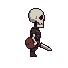</div><figcaption><b>지금</b></figcaption></figure>
      <figure><div class="stage">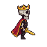</div><figcaption><b>A. 해골 왕</b><span>보석 왕관 · 금테 붉은 망토 · 금빛 검</span></figcaption></figure>
      <figure><div class="stage">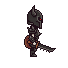</div><figcaption><b>B. 공포의 갑옷</b><span>검은 가시 판금 · 뿔 투구 · 톱날 검</span></figcaption></figure>
    </div>
  </section>

  <section>
    <h2>슬라임</h2>
    <div class="row">
      <figure class="now"><div class="stage"></div><figcaption><b>지금</b></figcaption></figure>
      <figure><div class="stage">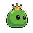</div><figcaption><b>A. 슬라임 왕</b><span>붉은 보석 금 왕관</span></figcaption></figure>
      <figure><div class="stage">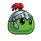</div><figcaption><b>B. 기사 슬라임</b><span>붉은 깃털 은 투구</span></figcaption></figure>
    </div>
  </section>

  <section>
    <h2>임프 <small class="lede" style="font-family:var(--body);font-size:13px">새로 그림, 확인 필요</small></h2>
    <div class="row">
      <figure class="now"><div class="stage">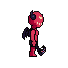</div><figcaption><b>지금</b></figcaption></figure>
      <figure><div class="stage">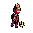</div><figcaption><b>A. 임프 왕</b><span>보석 왕관 · 보라 망토 · 금 삼지창</span></figcaption></figure>
      <figure><div class="stage">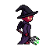</div><figcaption><b>B. 흑마법사 임프</b><span>뾰족 모자 · 보라 로브 · 초록 불 삼지창</span></figcaption></figure>
    </div>
  </section>

  <section>
    <h2>거미 <small class="lede" style="font-family:var(--body);font-size:13px">새로 그림, 확인 필요</small></h2>
    <div class="row">
      <figure class="now"><div class="stage">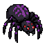</div><figcaption><b>지금</b></figcaption></figure>
      <figure><div class="stage">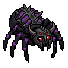</div><figcaption><b>A. 강철 거미</b><span>등 가시 쇠 판갑 · 뿔 투구</span></figcaption></figure>
      <figure><div class="stage">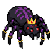</div><figcaption><b>B. 거미 여왕</b><span>보석 금 왕관 · 다리 금띠</span></figcaption></figure>
    </div>
  </section>

  <section>
    <h2>네크로맨서 <small class="lede" style="font-family:var(--body);font-size:13px">새로 그림, 확인 필요</small></h2>
    <div class="row">
      <figure class="now"><div class="stage">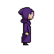</div><figcaption><b>지금</b></figcaption></figure>
      <figure><div class="stage">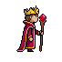</div><figcaption><b>A. 리치 왕</b><span>금 해골 왕관 · 진홍 로브 · 붉은 보석 지팡이</span><span>얼굴이 지금 그림보다 사람에 가까워졌습니다</span></figcaption></figure>
      <figure><div class="stage">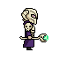</div><figcaption><b>B. 뼈 갑옷</b><span>해골 어깨 · 뿔 뼈 투구 · 초록 해골 지팡이</span></figcaption></figure>
    </div>
  </section>

  <section>
    <h2>새끼 용 <small class="lede" style="font-family:var(--body);font-size:13px">새로 그림, 확인 필요</small></h2>
    <div class="row">
      <figure class="now"><div class="stage">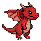</div><figcaption><b>지금</b></figcaption></figure>
      <figure><div class="stage">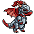</div><figcaption><b>A. 기사 용</b><span>은 판갑 · 붉은 깃털 투구</span></figcaption></figure>
      <figure><div class="stage">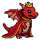</div><figcaption><b>B. 왕실 용</b><span>보석 왕관 · 금테 붉은 망토</span></figcaption></figure>
    </div>
  </section>

  <section>
    <h2>비용</h2>
    <div class="wrap"><table>
      <tr><th>항목</th><th>PixelLab 횟수</th></tr>
      <tr><td>외형 하나 (정지 그림 약 20 + 대기·공격·쓰러짐 움직임 약 5)</td><td>약 25</td></tr>
      <tr><td>12종</td><td>약 300</td></tr>
      <tr><td>전설 마왕 외형 (후보 몇 장 + 움직임)</td><td>약 100</td></tr>
      <tr><td>지금 남은 횟수 (10월 28일 갱신)</td><td class="ok">약 1,220</td></tr>
    </table></div>
  </section>

  <section class="ask">
    <h2>정해 주실 것</h2>
    <ul>
      <li>해골병·슬라임 4장: 승인됨(10월 2일). 움직임을 만드는 중입니다.</li>
      <li>임프·거미·네크로맨서·새끼 용 8장: 쓸지, 다시 뽑을 것이 있는지</li>
    </ul>
  </section>
</main>
